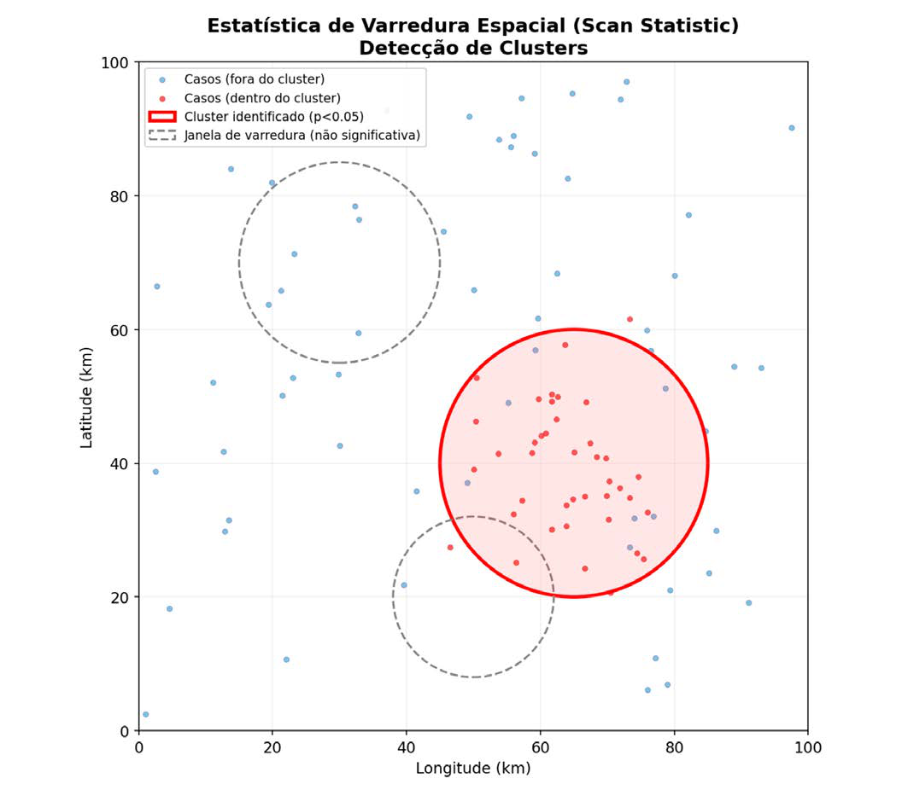
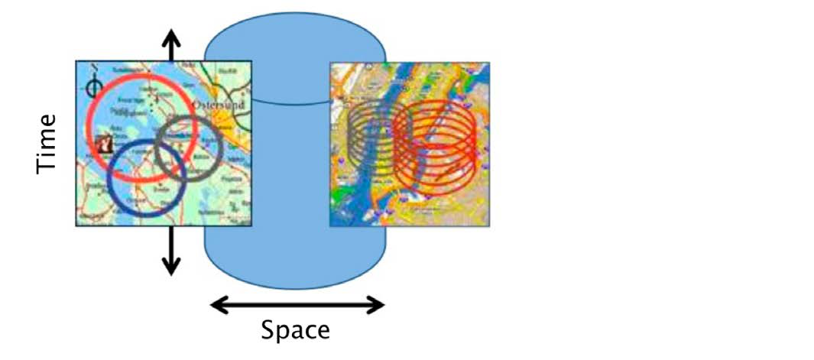
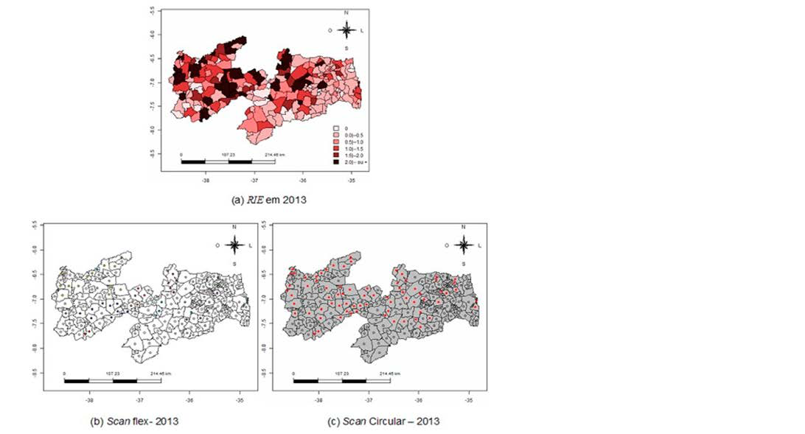

Módulo 3 | Aula 7
Análise Espacial de Dados – Pontos
Clusters Espaciais
Um cluster espacial é um aglomerado de eventos em uma área geográfica que é maior do que o esperado pelo acaso. A detecção de clusters é um dos principais objetivos da análise espacial em epidemiologia. Existem diferentes métodos para identificar clusters, sendo um dos mais conhecidos a estatística de varredura espacial (scan statistic), implementada em softwares como o SaTScan™ (Carneiro et al., 2007)
Nesta aula, não buscamos nos aprofundar na técnica nem no uso de softwares específicos, mas sim apresentar seu funcionamento e ilustrá-la com um exemplo prático.
Figura 5 - Estatística de varredura espacial (Scan Statistic) para detecção de clusters.

Fonte: Elaborado pelos autores (2026).
A figura demonstra o uso da estatística de varredura espacial (Scan Statistic) para identificar clusters. Os pontos vermelhos indicam casos dentro de um cluster significativo, destacado pelo círculo vermelho (p < 0,05), onde há concentração de eventos maior que o esperado ao acaso. Os círculos tracejados cinza representam janelas testadas sem significância estatística. Assim, a imagem mostra como o método varre o espaço com diferentes janelas e identifica apenas as regiões com evidência real de agrupamento espacial.
Figura 5: Esquema de varredura scan

Esta figura mostra a estatística scan que se baseia em um algoritmo que percorre a área de estudo como um cilindro, com variados tamanhos, que se move no espaço (base do cilindro) e no tempo (altura do cilindro) em busca de áreas cuja ocorrência de um fenômeno seja significativamente mais provável.
Fonte: KULLDORFF, M. SaTScan™ software for spatial, temporal and space-time scan statistics
Este método funciona “varrendo” a área de estudo com janelas de diferentes tamanhos (geralmente circulares). Para cada janela, o software compara o número de casos observados dentro dela com o número de casos que seria esperado se a distribuição fosse aleatória. Quando uma janela apresenta um excesso de casos estatisticamente significativo, ela é identificada como um cluster (Carneiro et al., 2007, Melo et al., 2023).
Essa abordagem tem sido amplamente utilizada no Brasil para investigar a distribuição de diversas doenças, como a detecção de clusters de dengue na Paraíba (Melo et al., 2023). Acesse em: https://www.scielo.br/j/cadsc/a/HGjB9yBPzHSxL5XLGngmNGB/?lang=pt
Figura 6: Mapas da Razão de Incidências Espacial (RIE) do dengue na Paraíba, Scan flex e Scan circular para 2013.

Os mapas revelam que o maior número de municípios que possuem risco elevado em 2013 encontra-se ao oeste, havendo uma pequena concentração na parte central do estado. As regiões do extremo leste e centro-sul possuem incidência relativamente baixa em comparação com as demais áreas do mapa.
Fonte: Melo et al. 2022. Cadernos Saúde Coletiva, v. 30, n. 1, p. 69‑79
A identificação desses clusters permite uma alocação mais precisa de recursos e a investigação de fatores de risco locais que possam estar contribuindo para a concentração de casos.